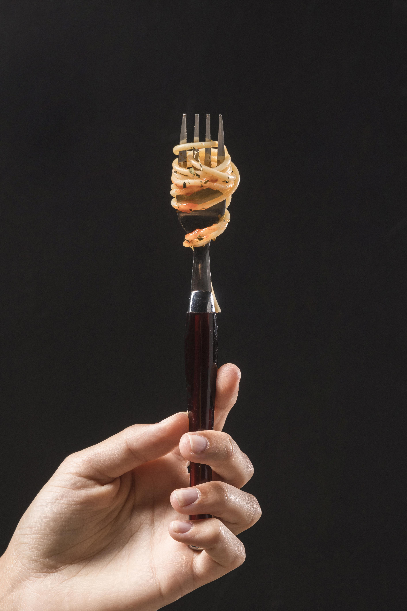
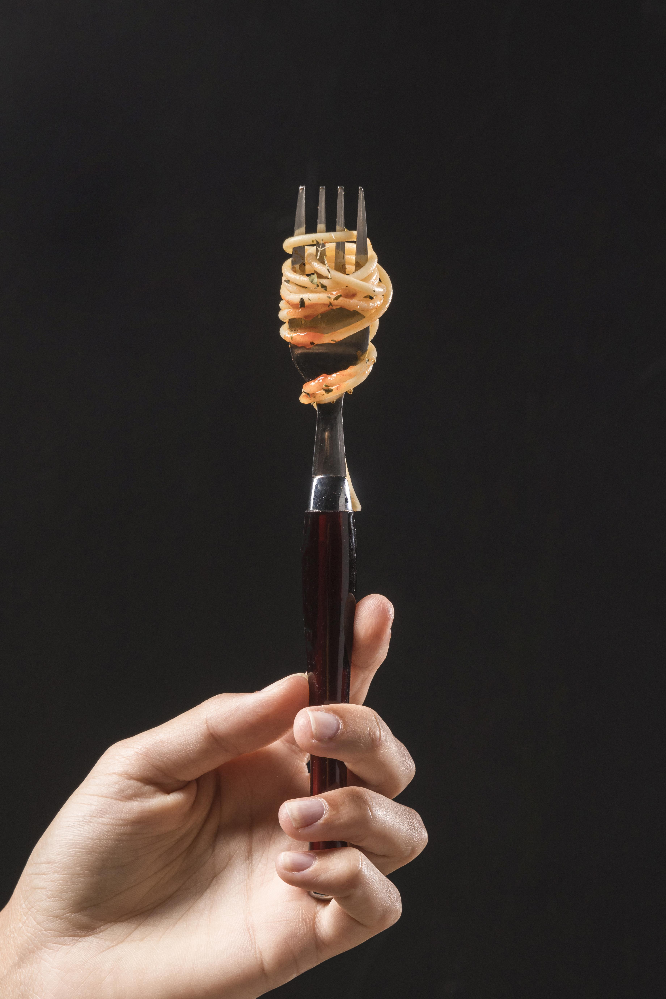

Nautilus a lo Largo del Tiempo:
José Pérez, inspirado por las historias que escuchó de sus abuelos sobre los días en
que la cantina era un pequeño rincón acogedor en el corazón del barrio, decidió llevar adelante la legado de
la familia y preservar el encanto y la autenticidad de Nautilus. Hoy, la cantina sigue siendo un lugar emblemático
para amigos, familias y viajeros que buscan una experiencia culinaria que celebra la tradición y el amor por la comida.

Te invitamos a visitarnos y ser parte de nuestra historia en constante evolución. En Cantina Nautilus,
la tradición y la innovación se mezclan para crear una experiencia culinaria única que esperamos compartas con nosotros.


 
